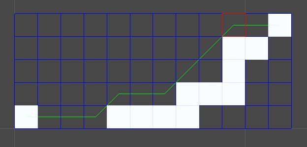
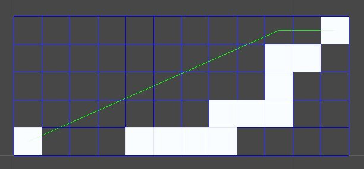
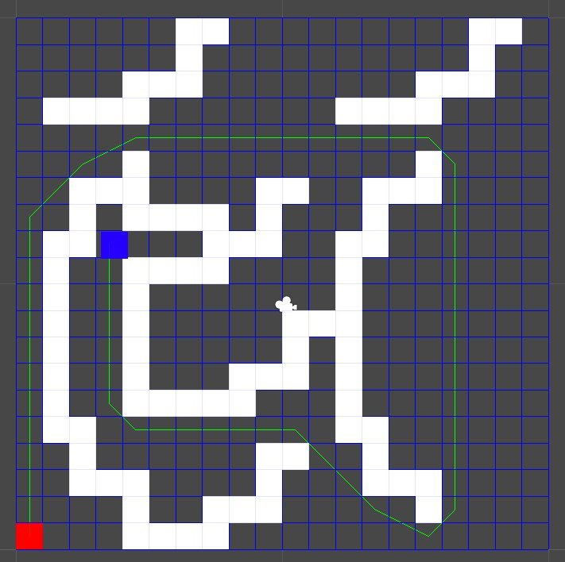

偶然和同好聊到 A* 時
得知了一種優化方法
可以得到更高效能的運算結果
先來看一張沒有用這種方法優化所算出來的路徑

private static ArrayList LineOfSight( ArrayList path )
{
ArrayList list = new ArrayList();
list.Add( (Node)path[0] );
Node startNode = (Node)path[0];
Node nextNode;
int checkIndex = 1;
while( checkIndex < path.Count )
{
nextNode = ( (Node)path[checkIndex] );
if( !Physics.Linecast( startNode.position, nextNode.position ) )
{
checkIndex++;
}
else
{
if( checkIndex == path.Count - 1 )
{
list.Add( (Node)path[checkIndex - 1] );
list.Add( (Node)path[checkIndex] );
}
else
{
list.Add( (Node)path[checkIndex - 1] );
startNode = (Node)path[checkIndex - 1];
nextNode = (Node)path[checkIndex];
}
checkIndex++;
}
}
return list;
}
接著找到原來的 CalculatePath 方法
並修改成
private static ArrayList CalculatePath(Node node)
{
ArrayList list = new ArrayList();
while (node != null)
{
list.Add( node );
node = node.parent;
}
list.Reverse();
return LineOfSight( list );
}
這樣一來就可算出 Line of sight 優化過後的路徑

